Why this project
Every other project in this portfolio builds around infrastructure that already exists — a VM gets configured, secured, or connected to. This one is the missing first step: standing up the compute resource itself, through the Portal's guided wizard rather than the CLI, and walking all the way through to an actual interactive session on the machine. It's also a useful baseline for what the Portal's defaults look like before anything gets hardened — several of which are flagged below as exactly the kind of shortcut that wouldn't survive a real security review.
Starting the creation wizard
Create a resource, from the Azure home page
The Portal's home page surfaces Create a resource as the first tile under Azure services — the general entry point for provisioning anything in Azure, not just VMs. Starting here rather than jumping straight to a Virtual Machines blade keeps the habit of going through the same front door every resource type shares, useful once a subscription has more than one kind of resource to manage.
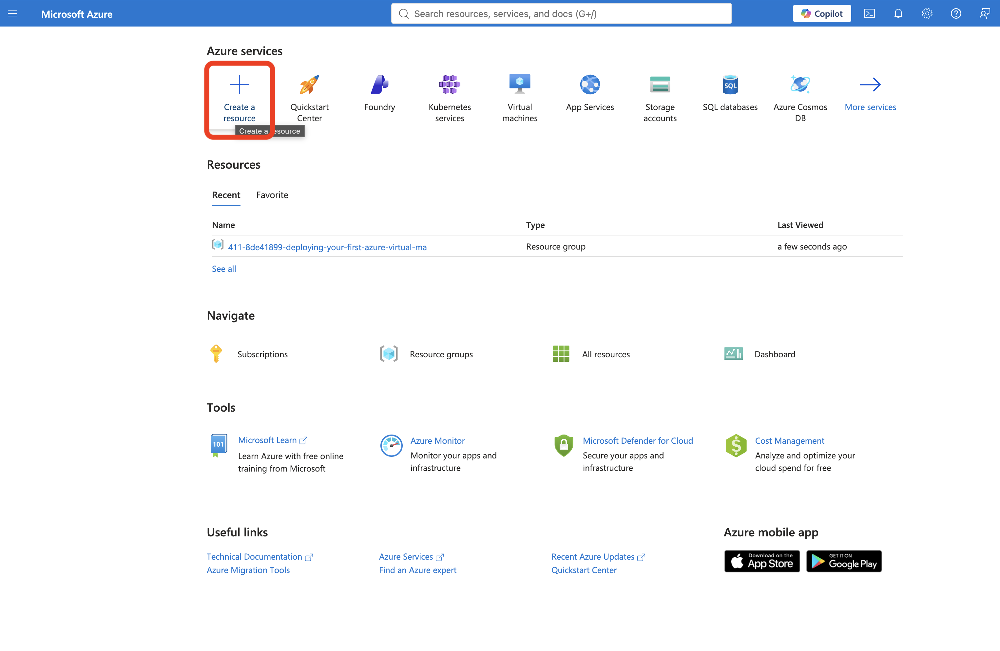
Select Virtual machine from the marketplace
The marketplace's Popular Azure services list surfaces Virtual machine directly, alongside other common compute and app services. Selecting Create here launches the multi-tab VM creation wizard — Basics, Disks, Networking, Management, Monitoring, Advanced, Tags, and Review + create — each tab representing a distinct category of decision that goes into standing up a VM.
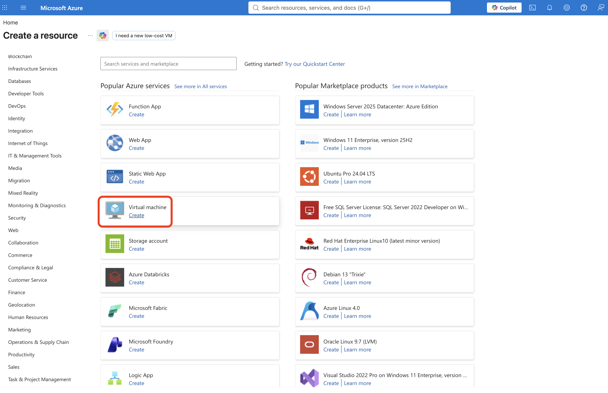
Basics: identity, image, and size
Name the VM and pick an image
Set the resource group, VM name (vm-windows), region (East US), and image (Windows Server 2025 Datacenter, Trusted launch, x64). Trusted launch — secure boot and a virtual TPM enabled by default on this image — is itself a meaningful default worth noting: it's a baseline integrity protection against boot-level rootkits and unauthorized firmware, and it's on without having to opt in.
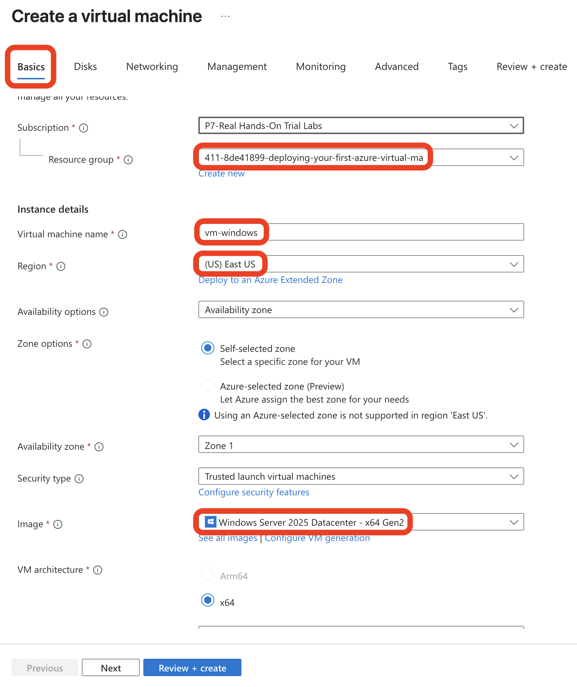
Set the administrator account and inbound port
Administrator username azureuser with a generated password (never displayed in this write-up), and Allow selected ports set to RDP (3389) under Public inbound ports. The Portal's own inline warning here is explicit: "This will allow all IP addresses to access your virtual machine. This is only recommended for testing." That's the Portal telling you, in the moment, exactly what the tradeoff is — worth reading rather than clicking past.
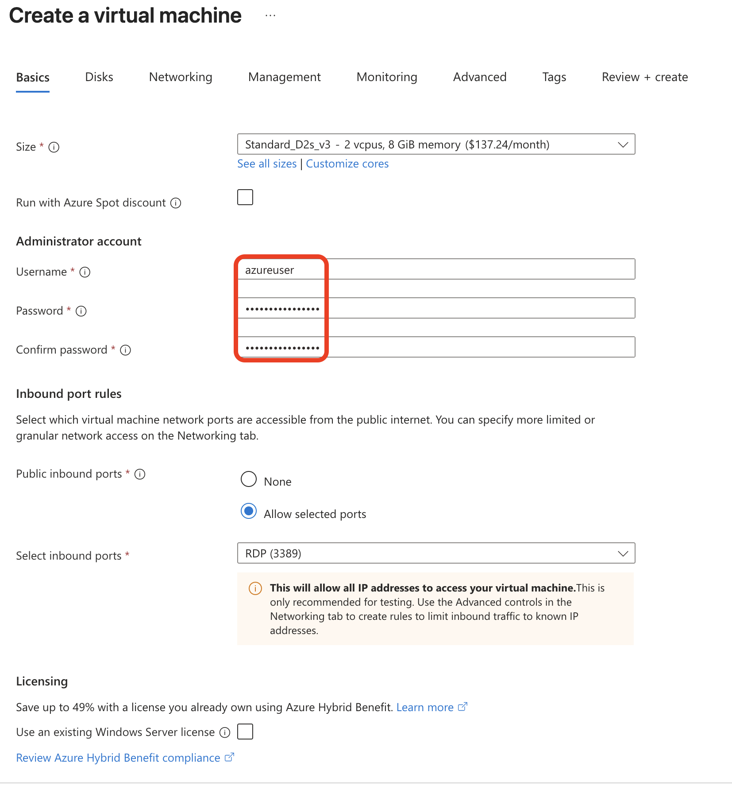
Review the Networking tab's defaults
A Basic NIC-level NSG is auto-created, with the same "allow selected ports" RDP rule carried over from Basics — meaning port 3389 is genuinely open to 0.0.0.0/0, not just a Basics-tab suggestion. Delete public IP and NIC when VM is deleted is checked, a tidiness default that keeps a deleted VM from leaving orphaned networking resources billing quietly in the background.
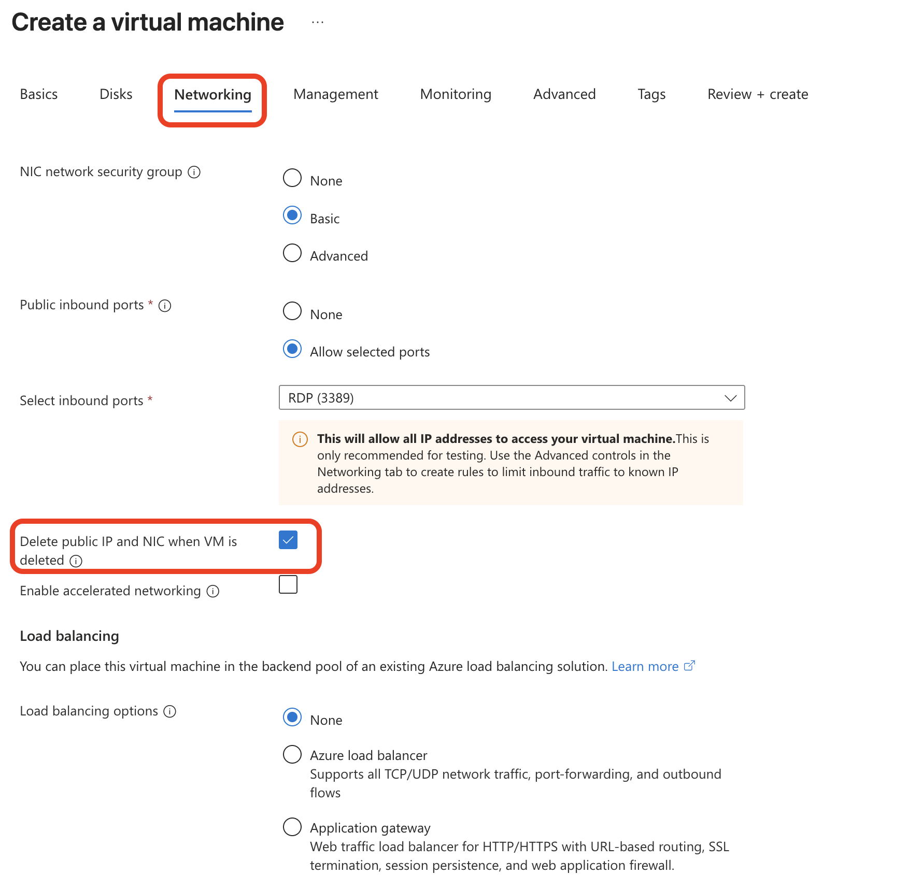
RDP would never be left open to the entire internet — the same least-privilege instinct as the scoped NSG rule in the VNet + NSG project. A real deployment would scope this to a known source range, put the VM behind Azure Bastion or a VPN with no public IP on the VM at all, or gate it behind Just-In-Time (JIT) VM access so the port only opens on an approved, time-limited request.
Review + create
The Review + create tab restates every choice in one place — including the same RDP-open-to-the-internet warning surfaced a second time, directly above the Create button. Reading the full review before clicking Create, rather than tabbing straight to it, is the same "confirm before you commit" instinct as reviewing a terraform plan before apply — the last chance to catch a setting before it becomes a billable, running resource.
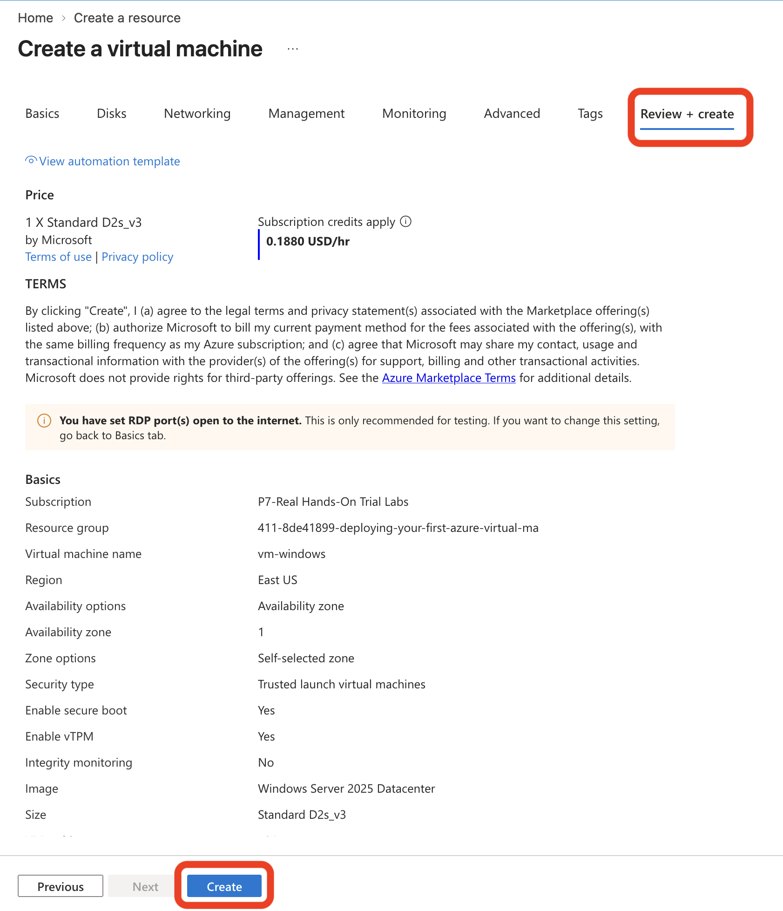
Deployment completes
Azure Resource Manager confirms the deployment finished, along with a correlation ID for the operation — useful for tracing this specific deployment through Activity Log or support later, distinct from the resources it actually created.
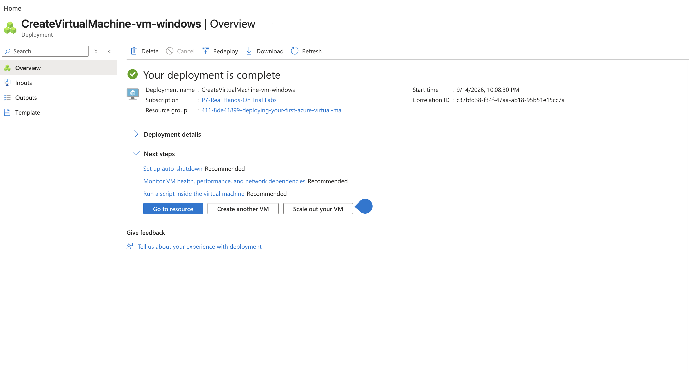
Confirming what actually got created
Six resources, one VM
The resource group shows the full footprint of what one VM creation actually provisions: the VM itself, a public IP, a network security group, a network interface, a managed disk, and a virtual network — six resources from a single wizard run. Checking the resource group after deployment, rather than assuming only the VM was created, is the same habit as confirming a Terraform plan's resource count matches expectations — a VM is never really "just a VM."
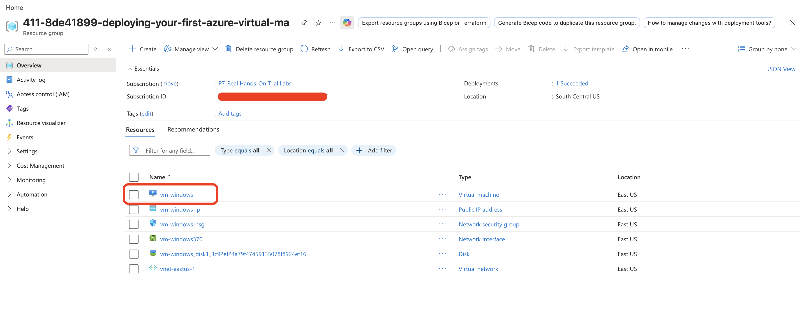
Open the VM and start a connection
From the VM's Overview page, Connect offers two paths: a direct Connect (native RDP) or Connect via Bastion, which proxies the session through Azure without ever exposing the VM's own public IP to the client. This project uses native RDP to keep the walkthrough to what the wizard set up by default — but Bastion is exactly the kind of change the production note above is describing.
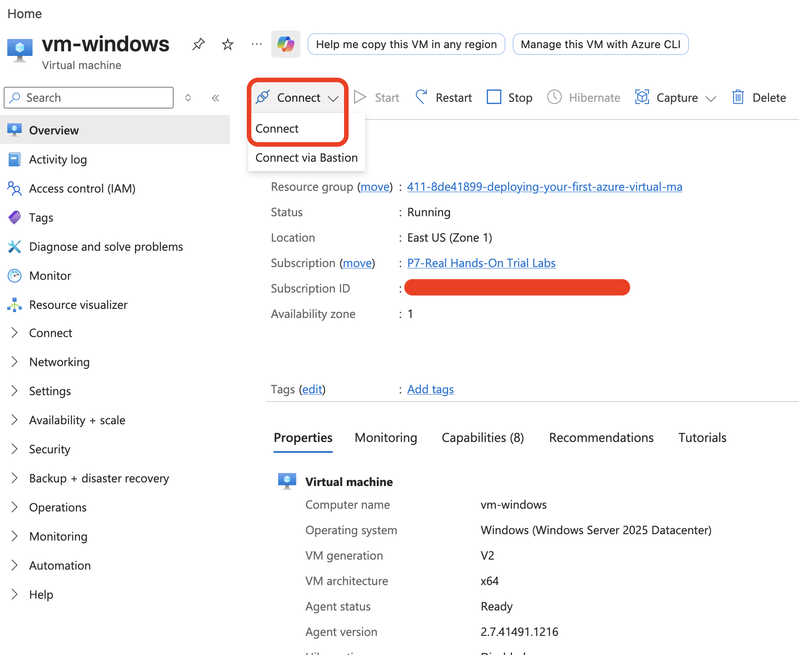
Native RDP connection details
The Native RDP pane lays out both ends of the connection explicitly: the source machine's own detected public IP, and the destination VM's public IP and port (3389). Seeing both addresses side by side is a useful sanity check before connecting — confirming the VM actually has a public IP assigned and that it's reachable on the expected port, rather than discovering a networking problem only after a connection attempt times out.
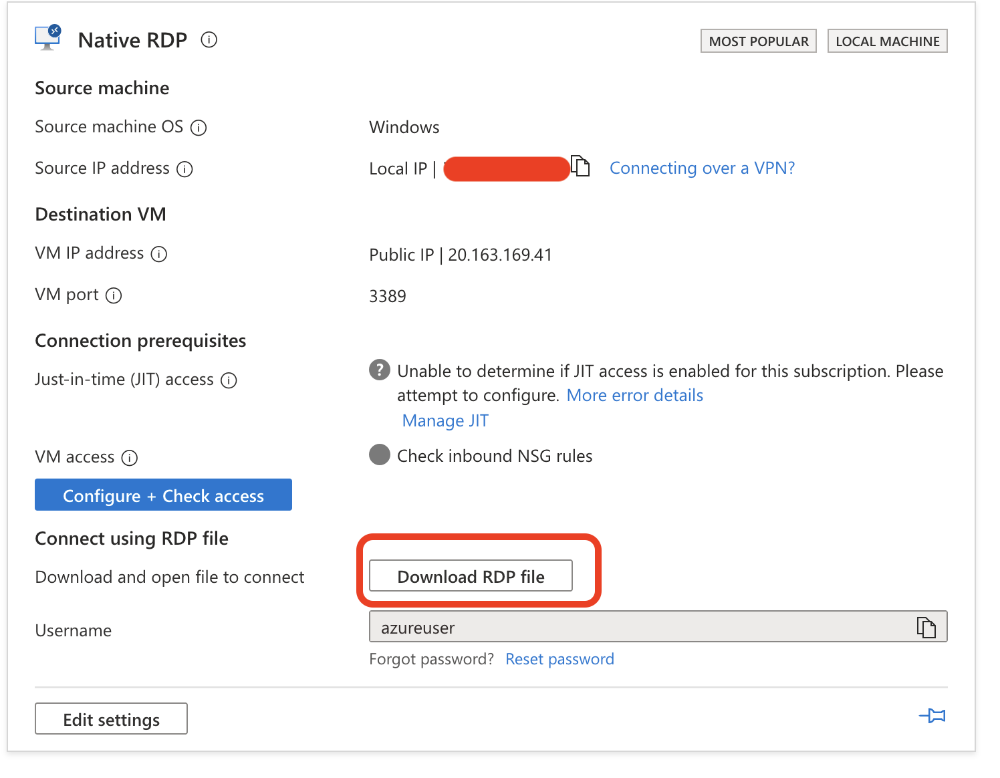
Result: a fully provisioned Windows Server VM, verified present alongside its supporting resources, with a ready RDP path confirmed before attempting to connect.
Connecting over RDP
Download the RDP file
The .rdp file is a small text-based configuration file — just the target address, port, and a handful of display settings — that Remote Desktop Connection reads to know where and how to connect. Downloading it rather than typing the address by hand each time is standard practice once a VM is going to be connected to more than once.
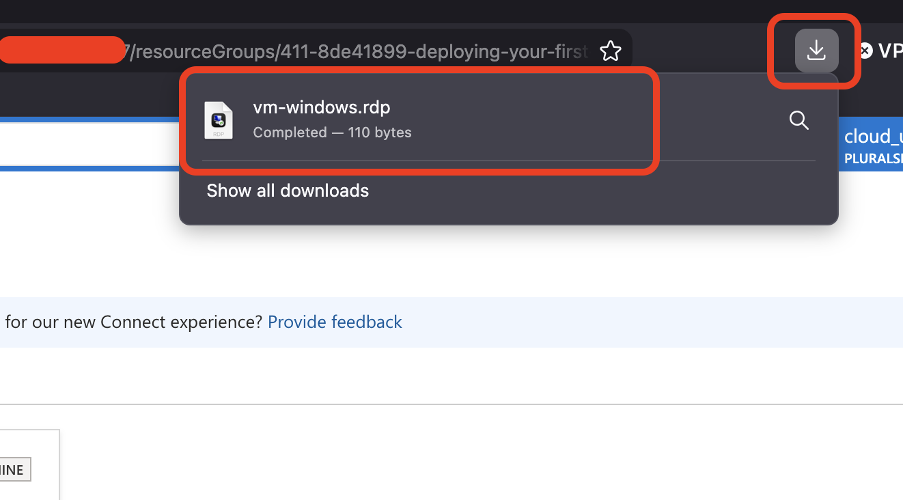
Accept the certificate warning
Remote Desktop Connection flags that the VM's certificate isn't from a trusted certifying authority — expected for a fresh VM using its self-signed default certificate rather than one issued by an internal or public CA. Confirming the certificate name matches the expected hostname (vm-windows) before clicking through is the actual check being performed here, not just dismissing a warning.
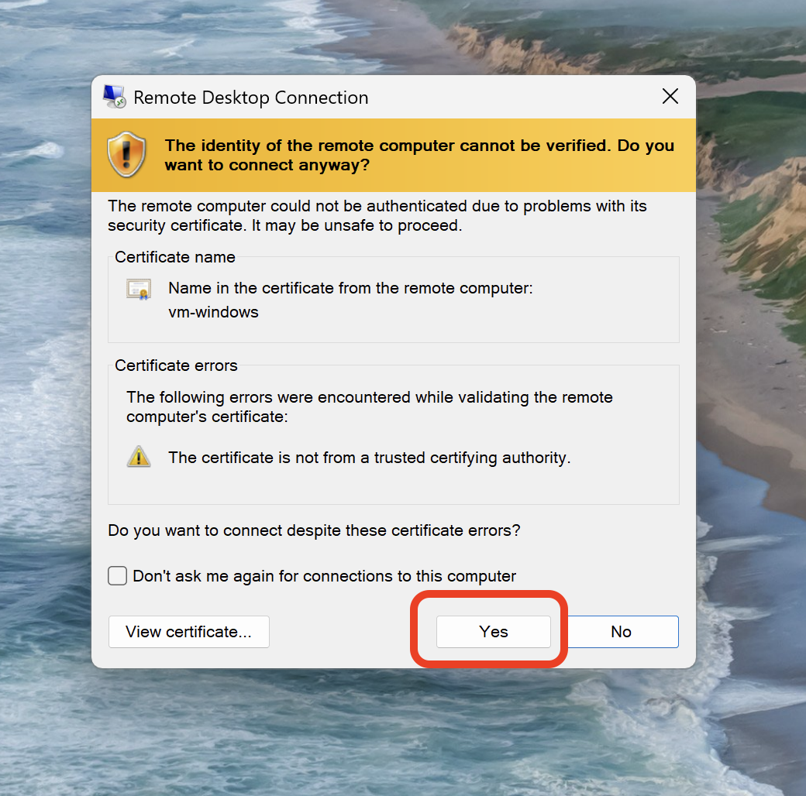
Authenticate as the administrator account
Windows Security prompts for the azureuser credentials set during provisioning. This is the same credential pair created back in step 04 — nothing new generated here, just the first time it's actually used to authenticate.
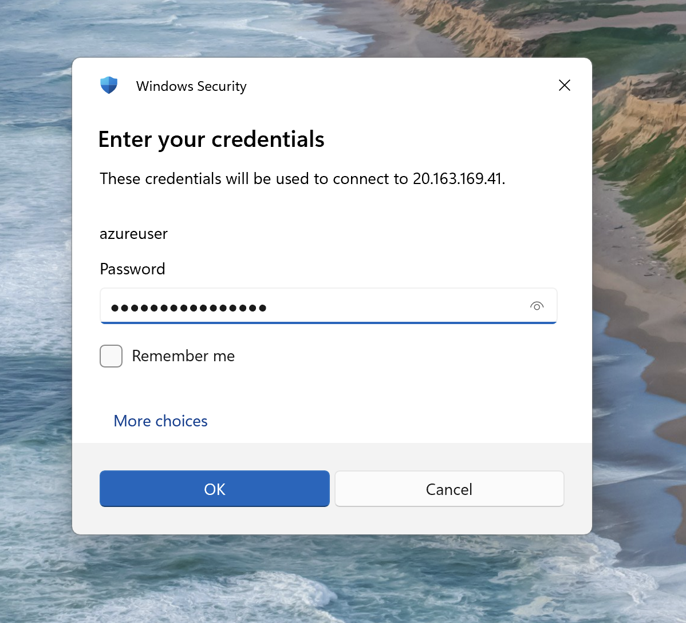
Landing on the desktop
Server Manager opens automatically on login — the default first-run experience for Windows Server, surfacing quick-start actions, roles, and server groups. Reaching this screen is the actual proof the whole chain worked: the VM provisioned correctly, its network path was reachable, and the credentials set at creation time were valid.
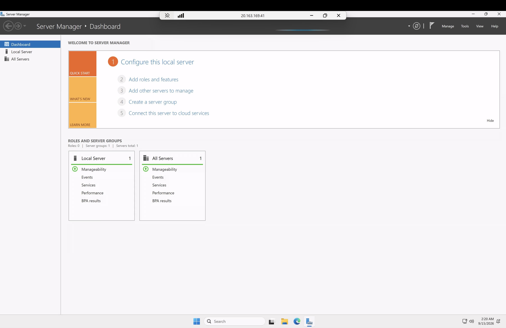
Result: an interactive session on a Windows Server VM that didn't exist twenty minutes earlier — provisioned, verified, and connected to end to end through the Portal.
What this demonstrates
- A single VM creation wizard run provisions six distinct resources, not one — knowing that upfront is what makes a resource group's contents make sense later, rather than looking cluttered.
- The Portal surfaces its own security tradeoffs in plain language, twice, before RDP is ever opened to the world — the wizard isn't hiding the shortcut, it's naming it. Reading those warnings instead of clicking past them is the whole point of a review step.
- Native RDP and Bastion solve the same problem — reaching a VM's desktop — with a materially different exposure profile. Choosing native RDP here was about seeing the wizard's actual default end to end, not a recommendation to skip Bastion in practice.
This project was conducted in a controlled sandbox environment. Real-world/production results and practices would differ — noted inline where relevant above.